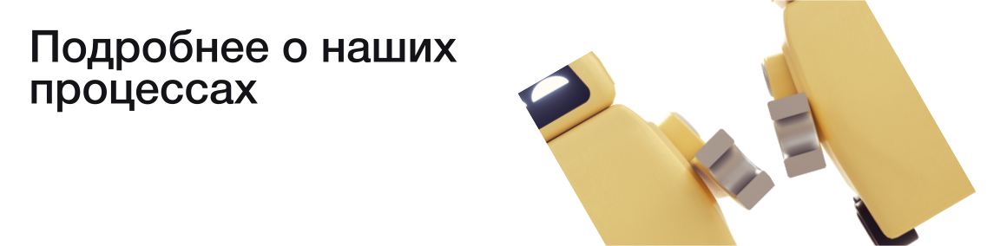

«МАРС ДОСТАВЛЯЕТ» - сервис доставки полезных ископаемых с марса, с помощью которого исследователи, научные институты и государства могут заказать полезные ископаемые.
У нашего сервиса по всему миру, расположены уникальные пункты выдачи заказов, специально расположены в удаленных от городов местах. Всё это для того чтобы груз мог бесзопасно приземлятся, без вреда городской инфраструктуре

За основу дизайна пункта выдачи была взята форма цилиндра. А основу для крыши фомируют два полукруга. Сделаноэто для того чтобы груз мог попадать сразу на склад, расположенный на втором этаже.

Огромный холл, внутри белый свет. По правую руку вдоль дуги расположены лаундж зона для ожидания, а впереди ресепшн. Стены холла украшены промо-текстом набранным стильным гротеском.

Если вы хотите подробнее узнать о наших процессах доставки, то вы можете перейти по нижнему блоку на наглядный анимированный пример.
А ещё у нас есть очень классное видео о нашем пространстве. Ссылочка тут.
